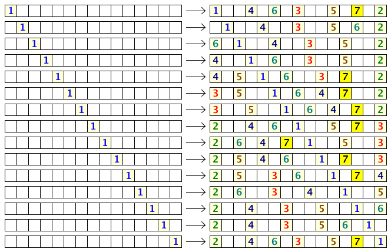

Project Euler 472
Project Euler 472
题目
Comfortable Distance II
There are N seats in a row. N people come one after another to fill the seats according to the following rules:
No person sits beside another.
The first person chooses any seat.
Each subsequent person chooses the seat furthest from anyone else already seated, as long as it does not violate rule 1. If there is more than one choice satisfying this condition, then the person chooses the leftmost choice.
Note that due to rule \(1\), some seats will surely be left unoccupied, and the maximum number of people that can be seated is less than \(N\) (for \(N > 1\)).
Here are the possible seating arrangements for \(N = 15\):

We see that if the first person chooses correctly, the \(15\) seats can seat up to \(7\) people.
We can also see that the first person has \(9\) choices to maximize the number of people that may be seated.
Let \(f(N)\) be the number of choices the first person has to maximize the number of occupants for \(N\) seats in a row. Thus, \(f(1)=1, f(15)=9, f(20)=6\), and \(f(500)=16\).
Also, \(\sum f(N) = 83\) for \(1\le N\le20\) and \(\sum f(N) = 13343\) for \(1\le N\le500\).
Find \(\sum f(N)\) for \(1\le N\le10^{12}\). Give the last \(8\) digits of your answer.
解决方案
因为规则是始终选与已坐者最近距离最大的位置（并左优先），并且禁止相邻，第一人落座后，左右两边会形成两个互不影响的子区间：左侧长度 \(i-1\)；右侧长度 \(N-i\)。
因此总入座人数可写成\(\mathrm{occ}(N,i)=1+b(i-1)+b(N-i),\)其中 \(b(x)\) 表示长度为 \(x\) 的单边开放区间（另一侧邻着一个已坐者）最多还能坐多少人。
于是\(f(N)\)的值是令\(\mathrm{occ}(N,i)\)达到最大的\(i\)的数量。
为了推出 \(b\)的闭式，我们定义 \(a(n)\)，它和\(b(n)\)的区别就在于双边都是不开放的（双边都不能坐人）。显然：\(a(0)=a(1)=a(2)=0\)，对 \(n\ge2\)，单边段里第一步一定先坐最右端（离左侧已坐者最远），剩下就是一个双边段，故\(b(n)=1+a(n-1), n\ge2,\)且\(b(0)=b(1)=0,b(2)=1.\)
对双边段长度 \(n\)：
- 若 \(n=2t+1\)（奇数），最佳点唯一在中点，坐下后分成两个长度 \(t\) 的同构子段：\(a(2t+1)=1+2a(t).\)
- 若 \(n=2t\)（偶数），两个中点等距，按“最左优先”选左中点，分成长度 \(t-1\) 与 \(t\) 两段：\(a(2t)=1+a(t-1)+a(t).\)
由 \(b(n)=1+a(n-1)\)可得：
- 偶数点 \(n=2t\)：\(b(2t)=1+a(2t-1)=1+\bigl(1+2a(t-1)\bigr)=2\bigl(1+a(t-1)\bigr)=2b(t).\)
- 奇数点 \(n=2t+1\)：\(b(2t+1)=1+a(2t)=1+\bigl(1+a(t-1)+a(t)\bigr)=b(t)+b(t+1).\)
所以得到
\[ b(2t)=2b(t), b(2t+1)=b(t)+b(t+1) \]
令\(q=\lfloor\log_2 n\rfloor, p=2^q, (n\ge2),\)则 \(n\in[p,2p]\)。可由上面递推对二进制层级归纳得到：
\[ b(n)= \begin{cases} \dfrac p2, & p\le n\le \dfrac{3p}{2},\\ n-p, & \dfrac{3p}{2}\le n\le 2p. \end{cases} \]
等价写法：
\[ b(n)=\max(2^{q-1},n-2^q), n\ge2,q=\lfloor\log_2 n\rfloor \]
并补上 \(b(0)=b(1)=0\)。
如果完全没有结构性损失，直觉上每多坐 1 个人，大约要消耗2 个位置量级（一个自己坐，一个因为相邻约束不能再用），于是理想上应接近\(b(n)\approx \dfrac{n}{2}.\)因此，我们定义浪费位函数\(c(n)=n-2b(n).\)代入上式（\(n\ge2\)）：
- 若 \(p\le n\le \dfrac{3p}{2}\)，\(b(n)=\dfrac p2\)，所以\(c(n)=n-p.\)
- 若 \(\dfrac{3p}{2}\le n\le 2p\)，\(b(n)=n-p\)，所以\(c(n)=2p-n.\)
即有等价写法：
\[ c(n)=\min(n-2^q,2^{q+1}-n), n\ge2,q=\lfloor\log_2 n\rfloor \]
并有边界值\(c(0)=0, c(1)=1.\)所以对 \(n\ge2\)，\(c(n)\) 就是一个标准三角波：它等于 \(n\) 到最近两个幂点 \(2^q,2^{q+1}\) 的较小距离。
令\(u=i-1, v=N-i, s=u+v=N-1.\)则\(\mathrm{occ}(N,i)=\dfrac{N+1-c(u)-c(v)}{2}.\)所以最大化 \(\mathrm{occ}\) 等价于最小化\(C_s(u)=c(u)+c(s-u), 0\le u\le s.\)因此
\[ f(N)=\#\{u\in[0,s]\cap\mathbb Z:C_s(u)=\min_{t\in[0,s]\cap\mathbb Z}\{C_s(t)\}\}. \]
因为 \(c(\cdot)\) 是分段线性、斜率只会在 \(\{-1,+1\}\) 间变化，\(C_s(u)\) 的斜率只会在 \({-2,0,+2}\) 间变化，所以每一段最优解个数会形成严格的等差三角形模式。
因此，我们把 \(N\) 写在块\(2^n < N \le 2^{n+1}+2, n\ge 3\)中，再按二级参数分段。设\(N=2^n+2^k+j.\)
- 上升段\(f(2^n+2^k+j)=2j, 1\le j\le 2^{k-1}.\)
- 峰值点\(f(2^n+2^k+2^{k-1}+1)=2^{k+1}+2.\)
- 下降段\(f(2^n+2^k+2^{k-1}+j)=2\big(2^{k-1}+2-j\big), 2\le j\le 2^{k-1}.\)
对于顶层 \(k=n-1\)，则有
\[ \begin{aligned} f(2^n+2^{n-1}+j)&=2j, 1\le j\le 2^{n-2},\\ f(2^n+2^{n-1}+2^{n-2}+1)&=2^{n-1}+2^{n-2}+3,\\ f(2^n+2^{n-1}+2^{n-2}+j)&=2^{n-2}+4-j, 2\le j\le 2^{n-2}+1, \end{aligned} \]
并且\(f(2^{n+1}+2)=8.\)
由于上面每段都是：单点常数，或等差数列（公差 \(+2\)、\(-2\)、\(-1\)），所以可以用“按段累加 + 截断”完成。
代码
1 | N = 10 ** 12 |